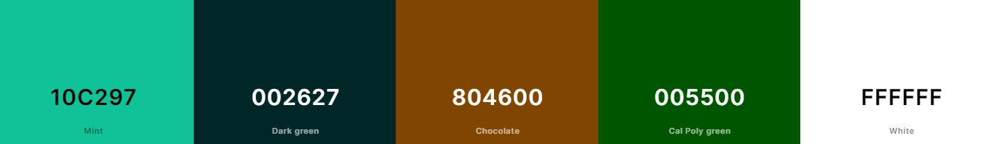
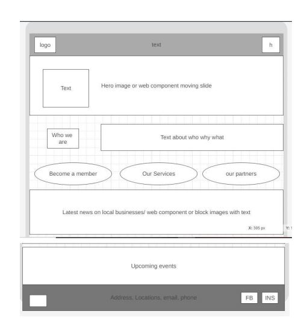

Site Purpose
1. The Waiheke Islamd Chamber of Commerce provides this website to PROMOTE local businesses through advocacy and networking.
2. The Chamber of Commerce helps to SUPPORT local business GROWTH and help thoses businesses THRIVE.
Scenarios
1. What local businesses sell food/cuisine/drink/crafts?
2. Where can I stay for a holiday?
3. Whats the Local real estate called? I want to buy a batch or house?
4. What entertainment for the kids & adults on the island?
5. I'm looking for a possible wedding venue?
6. Are there festivals happening?
7. Where can I go snorkelling/kayaking/diving/fishing?
8. What camping sites are on the island?
9. Are there local bird watching or nature groups?
10. Tours of the vineyards or historic sites?
11. What is the cost of membership?
12. What services are on the island for fisherman?
Color Schema
Palette URL: https://coolors.co/10c297-002627-804600-005500-FFFFFF Header & footer - 10c297
Background & text - 002627
Borders, boxes, buttons - 804600
hover buttons, text - 005500
whitespace, text larger fonts on dark colors etc - FFFFFF
Typography
Headings Font: Oxygen
Paragraph Font: Open Sans
Normal paragraph example
Waiheke Island is located 20 mins by ferry or 10 min flight from Auckland city. It boasts a tranquil feel with calm beaches, local island crafts, seafood and cuisine coupled with home grown wines. A playground for the adventurer, humble camper or a stunning backdrop for your event or wedding.
Navigation
Wireframes
1. Mobile
Home page with header, footer, logo, web components, images and text content, buttons, hamburger, facebook, instagram.
